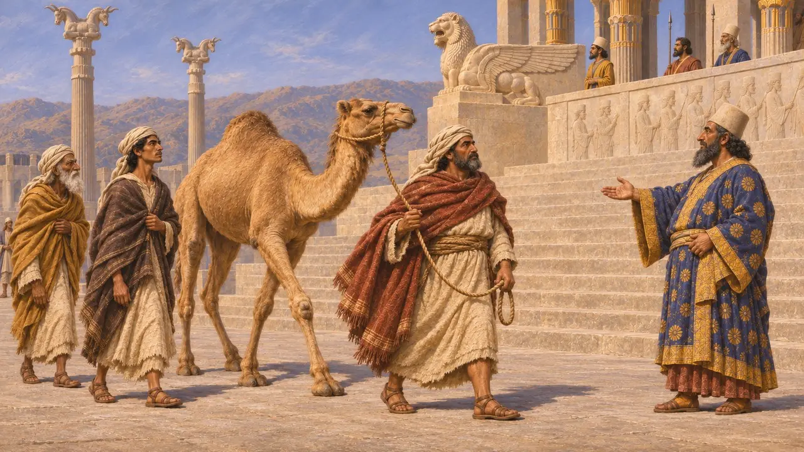
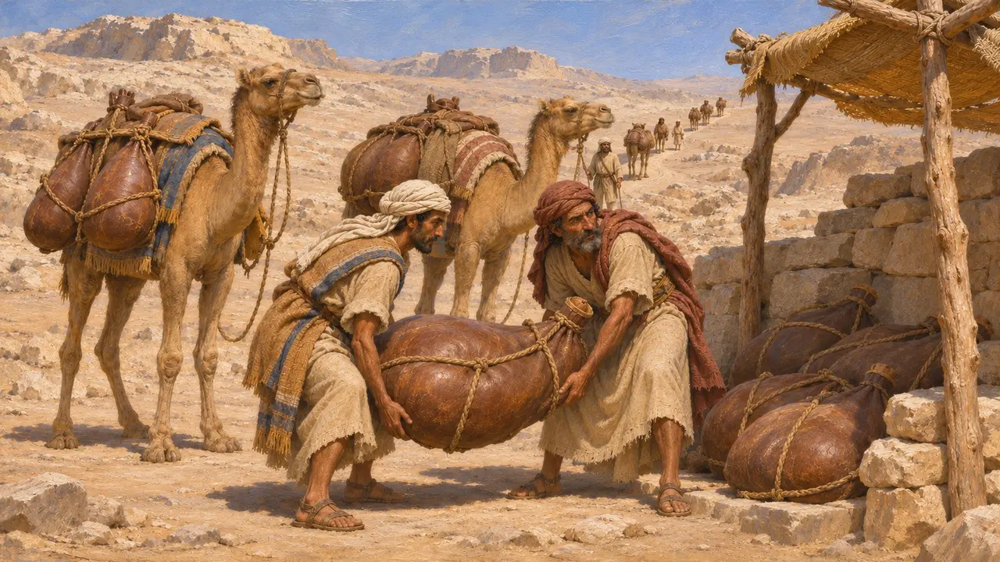
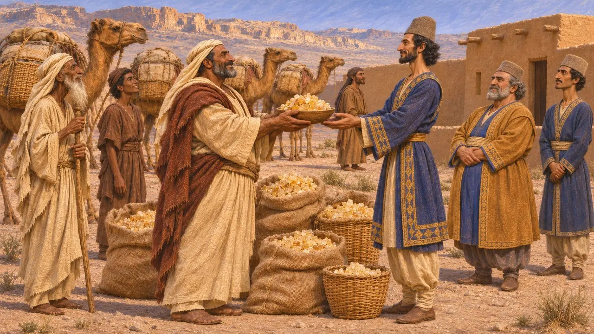
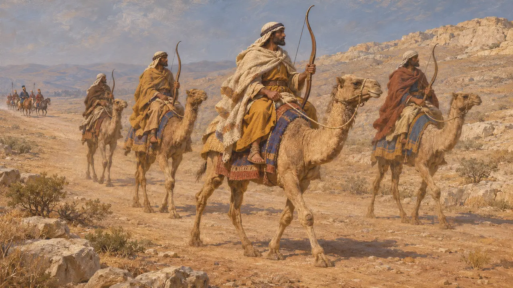
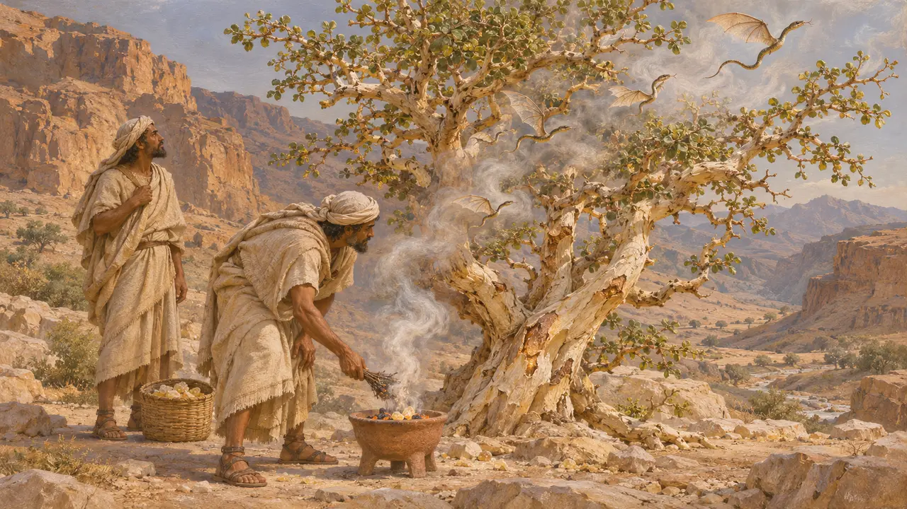
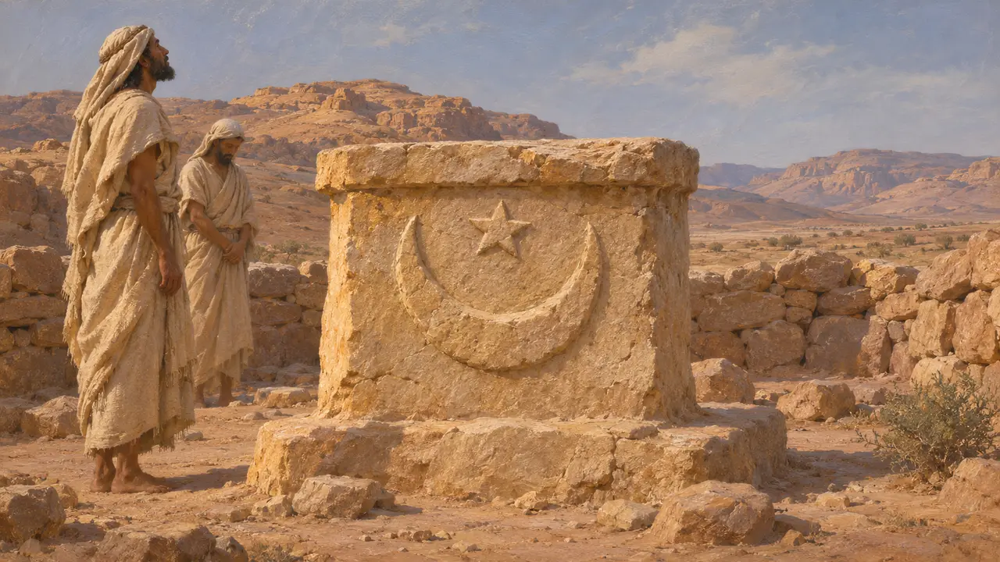

阿契美尼德时代的阿拉伯人，是游牧于美索不达米亚、叙利亚与埃及之间诸沙漠的牧驼民族。其中一些人把守着通往埃及的沙漠通道，阿拉伯商人则从南方运来乳香等香料。波斯铭文将阿拉伯列为国王的属地，而希罗多德却说阿拉伯人是国王的友人，而非他的臣民。
游戏中： 游戏将阿拉伯人呈现为贸易伙伴，以及国王军中的骆驼骑兵。希罗多德称他们每年进献的乳香是礼物而非贸易，且只在公元前480年薛西斯的大军中记述了阿拉伯骆驼骑兵。

国王名录中的阿拉巴亚
见于史载大流士的贝希斯敦铭文将阿拉巴亚列入他即位为王时归附于他的诸地之中。这个名字在他后来的诸地名录中再次出现；在他位于纳克歇-洛斯塔姆的陵墓上，一尊带有题名的托举王座者像被称为“阿拉伯人”。在波斯波利斯阿帕达纳宫的阶梯浮雕上，现代学者认定一支牵着单峰驼的使团为阿拉伯人，尽管那幅浮雕并无标注。
DB §6; DNa; DNe; E. F. Schmidt, Persepolis I, 1953

为冈比西斯供水
古代记述希罗多德称，公元前525年冈比西斯筹划入侵埃及时，希腊叛逃者法涅斯建议他向阿拉伯王请求借道，穿越无水的荒漠。阿拉伯王立誓应允，并命骆驼驮着装水的皮囊，送往沿途各处驻点。希罗多德描述了阿拉伯人以鲜血涂抹石块来立誓的习俗，并称他们的神祇名为奥罗塔尔特和阿里拉特。
Herodotus 3.4-3.9

友邦还是臣属
争夺中希罗多德称，阿拉伯人从未臣服于波斯，也不纳税，而是每年向国王献上1,000塔兰特乳香作为礼物。然而波斯的属地名录把阿拉巴亚与其他地方一样列为国王的领土。史家对所指的究竟是哪些阿拉伯人也有争议：铭文中的阿拉巴亚可能是美索不达米亚与叙利亚之间的草原，而希罗多德笔下的盟友控制的则是西奈通道。
Herodotus 3.88, 3.91, 3.97; P. Briant, From Cyrus to Alexander, 2002

薛西斯军中的骆驼骑兵
古代记述希罗多德称，薛西斯军中的阿拉伯人身穿束带长袍，手持向后反曲的长弓。他们的骆驼快如骏马，被安排在队尾，以免惊吓骑兵的战马。他们与埃塞俄比亚人一同由大流士之子阿尔萨美斯统领。希罗多德估计阿拉伯骆驼骑兵与利比亚战车兵合计20,000人，而史家认为他给出的全军总数被大大夸大了。
Herodotus 7.69, 7.86-7.87, 7.184

乳香与飞蛇
后世传说希罗多德转述了一些故事：阿拉伯的乳香树由带翼的小蛇守护，需焚烧苏合香以烟驱赶。他还讲到桂皮由形似蝙蝠的生物看守，肉桂枝则取自巨鸟的巢穴。这些是关于远方贸易的旅人传闻，并非对香料采集方式的真实描述。
Herodotus 3.107-3.113

名称旁的徽记
争夺中阿拉伯人的军旗没有任何记载。游戏中的新月和星是一种诠释：见于阿拉伯半岛祭坛和铭文的星象徽记。希罗多德描述了阿拉伯人的立誓方式和他们的神，但没有提到旗帜。
Herodotus 3.8; J. Retso, The Arabs in Antiquity, 2003
来源
- Herodotus, Histories, books 3 and 7
- DB §6; DNa; DNe
- P. Briant, From Cyrus to Alexander, 2002
- I. Eph'al, The Ancient Arabs, 1982
- J. Retsö, The Arabs in Antiquity, 2003
- E. F. Schmidt, Persepolis I, 1953